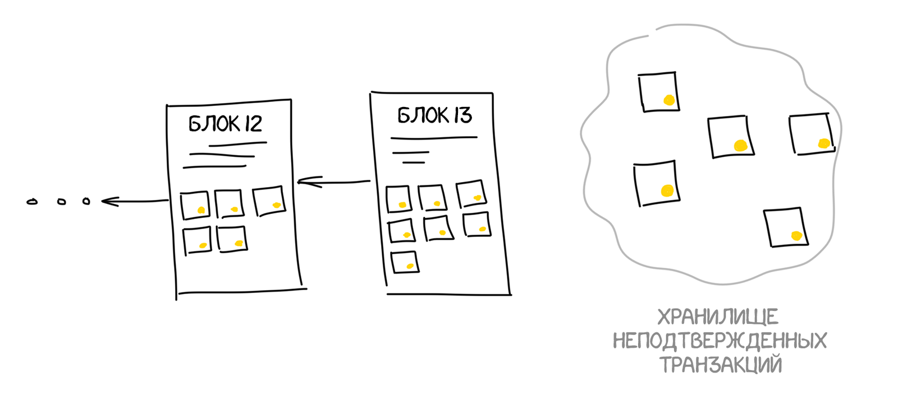

Набрав себе транзакций из пула компьютер начинает составлять из них такой же неподделываемый список, как мы в начале поста на доске у себя дома. Только делает он его в виде дерева — хеширует записи попарно, потом результат еще раз попарно и так пока не останется лишь один хеш — корень дерева (Дерево Меркла), который и добавляется в блок.
Так как актуальный блокчейн уже скачан, наш компьютер точно знает какой в нём сейчас последний блок. Ему остается только добавить ссылку на него в заголовок блока, захешировать всё это и сообщить всем остальным компьютерам сети «смотрите, я сделал новый блок, давайте добавим его в наш блокчейн».
Остальные должны проверить, что блок построен по всем правилам и что мы не добавили туда лишних транзакций, а затем добавить к себе в цепочки. Теперь все транзакции в нём подтверждены, блокчейн увеличен на один блок и всё идет хорошо, не так ли?